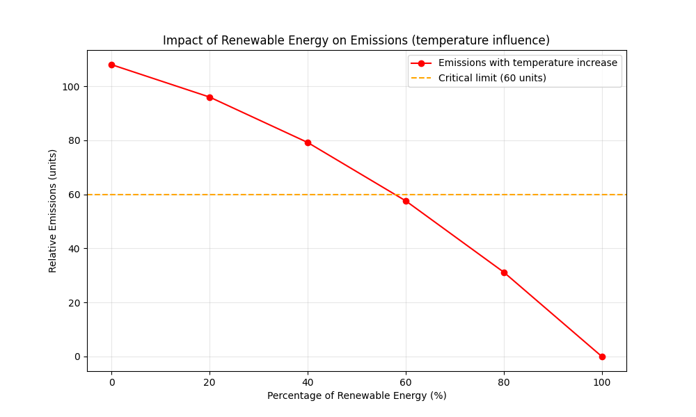

Environmental impact simulation based on temperature and renewable energy.
The temperature values used in the model correspond to real or simulated readings collected by the micro:bit during the data collection phase.
This model uses a simplified linear relationship to demonstrate trends, not to predict real-world values.
The initial data was loaded from a JSON file. New values entered by the user
are stored locally using localStorage, simulating continuous data
collection without requiring a server.
The chart shown in this project was implemented in JavaScript using the Chart.js library. JavaScript is used only for interactive visualisation of the data collected by the micro:bit. The computational model and the what-if simulations were developed separately in Python.
This simple model estimates CO₂ emissions or environmental impact based on the percentage of renewable energy and the simulated average temperature.
The model abstracts real-world climate systems into a simplified linear relationship between renewable energy percentage and temperature. This abstraction allows scenario testing without modelling full atmospheric complexity.
import matplotlib.pyplot as plt
import numpy as np
renewables = np.array([0, 20, 40, 60, 80, 100]) # %
temperature = np.array([40, 35, 32, 28, 25, 22]) # °C (simulated outcome)
plt.figure(figsize=(10, 6))
plt.plot(renewables, temperature, marker='o', color='red')
plt.axhline(y=30, linestyle='--', label='micro:bit alert threshold (30°C)')
plt.title("Impact of Renewable Energy on Temperature")
plt.xlabel("Percentage of Renewable Energy (%)")
plt.ylabel("Average Temperature (°C)")
plt.grid(True, alpha=0.3)
plt.legend()
plt.show()

Model Equation (approximate):
The relationship between renewable energy (R) and temperature (T) can be approximated as:
T ≈ 40 − 0.18R
Interpretation:
The higher the percentage of renewable energy, the lower the predicted temperature. This reduces the
likelihood of exceeding the micro:bit alert threshold, even under global warming conditions.
What-if: With 80% renewable energy, the model predicts a temperature of approximately
25 °C, which is around 15 °C lower than the baseline scenario
Reminder: This model is a simplification. In reality, environmental systems are more
complex and influenced by additional factors such as economic activity, policy decisions,
energy storage, and technological efficiency.
This model was generated locally and saved as an image for inclusion in the final report.